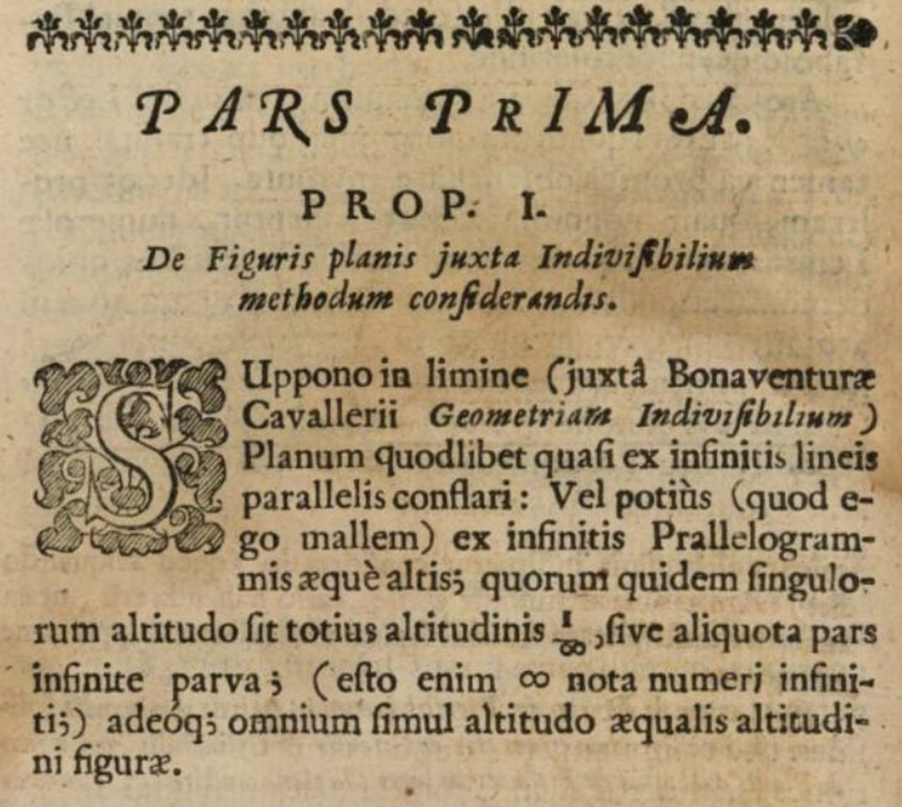
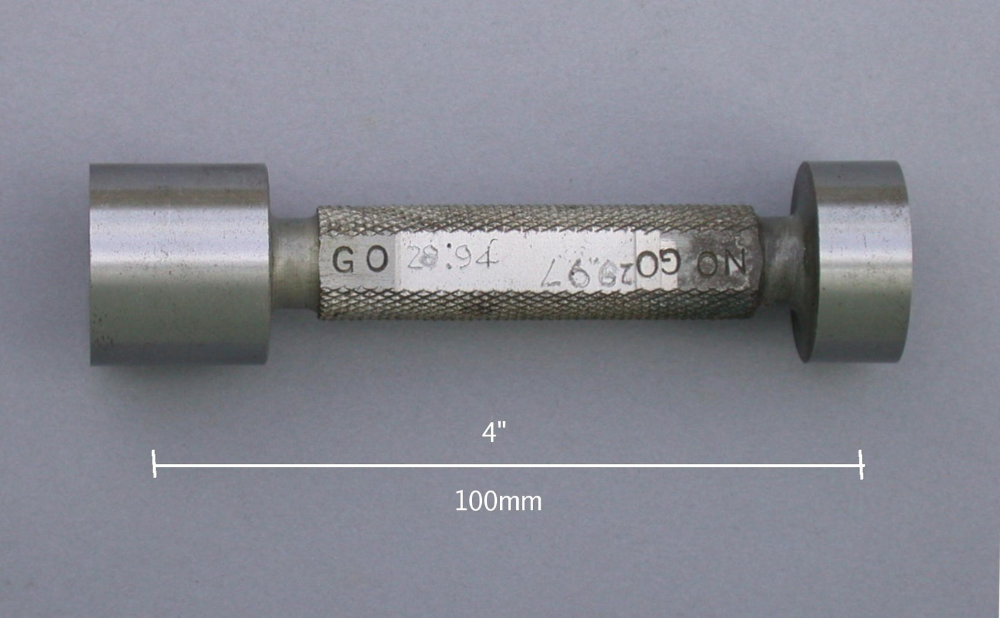
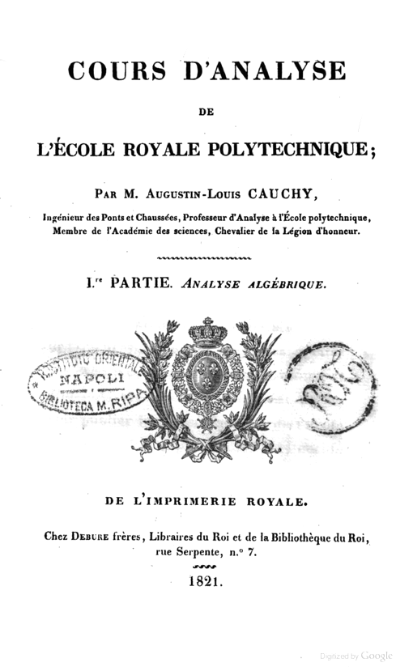
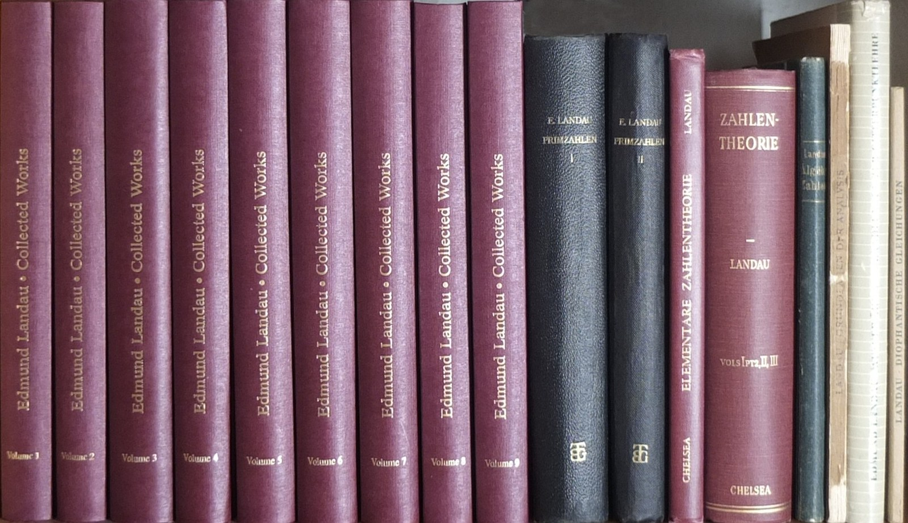

第6回
星は日周運動で、北極星のまわりに円を描きながら、無数の細い線になって空に残る。
Navneet Sharma（2020年）／CC BY-SA 4.0／Wikimedia Commons（リシケシュ。上下を切り落とし、横長に切り出した）
第1部「微積分の再建」の最初の回。関数の値を「代入」できない場所で何が起きるかを出発点に、「近づく」を ε-δ で言い直す（書けなくてよい、読めるようになる）。極限の記号 $\lim$、$\to$、片側極限、$\infty$、連続、そして「どれくらい小さいか」を書くランダウの記号 $o$、$O$ を、省略を1段ずつ元に戻しながら確かめる。
第1回〜第5回と同じく、飛ばしてよい部分は飛ばしてよい。高校の数学Ⅲと1年の微分積分で習った極限・連続も、短く一度は書く（「覚えている人は飛ばしてよい」と書いてある部分）。
この回の山は、第3節の ε-δ である。ここは「自分で証明を書けるようになる」ことを目標にしない。書いてある式を、日本語に直して読めることを目標にする。読めれば、後の回（連続、微分可能性、級数の収束、数値計算の誤差）で「$\varepsilon$ と $\delta$ が出てきた」ときに、何を言っているかがわかる。
記号が出るたびに、緑色の枠（記号）で「①読み方 ②日本語での意味 ③省略していない書き方 ④どこで出会うか」を書く。全部の記号は 記号索引 からも探せる。省略の段階の考え方は 第1回 6.1。
この回で新しく説明する記号と、前の回で説明済みの記号に分けて一覧にする。「→」で説明のある場所へ飛べる。
| 記号 | 読み方 | ざっくりした意味 | 説明 |
|---|---|---|---|
| $\displaystyle\lim_{x\to a}f(x)=L$ | リミット、エックスがエーに近づくときのエフ・エックス | $x$ を $a$ に近づけたとき $f(x)$ が近づく先 | →2.1 |
| $x\to a$、$f(x)\to L$ | エックス、トゥ（へ）、エー | 「近づける」という動作そのもの | →2.1 |
| $x\to a^{+}$、$x\to a^{-}$ | 右から近づける、左から近づける | $a$ より大きい側／小さい側だけから近づける | →2.4 |
| $\infty$、$-\infty$ | 無限大、マイナス無限大 | 数ではなく「限りなく大きくなる」という状態 | →2.5 |
| $\varepsilon$、$\delta$（ε-δ論法） | イプシロン、デルタ | 「いくらでも近い」を、許す誤差 $\varepsilon$ と範囲 $\delta$ で言い直す | →3.3 |
| 連続 ($f$ は $a$ で連続) | れんぞく | 極限の値と、その点での値が一致する | →5.1 |
| $f(x)=o(g(x))$ ($x\to a$) | スモール・オー | $f$ は $g$ より桁違いに小さい | →6.2 |
| $f(x)=O(g(x))$ ($x\to a$) | ラージ・オー（ビッグ・オー） | $f$ は $g$ の定数倍で押さえられる | →6.3 |
省略の段階：極限の ε-δ（日本語→論理式→$\lim$）、ランダウの記号。
| 記号 | 意味 | 説明のある場所 |
|---|---|---|
| $:=$ | 左の名前を右の式で定める | 第1回 2.2 |
| $\approx$ | ほぼ等しい（「どれくらい」は書かれていない） | 第1回 2.4 |
| $\lt\ \gt\ \le\ \ge$ | 大小の関係 | 第1回 2.6 |
| $\neq$ | 等しくない | 第1回 2.6 |
| $\cdots$ | 同じ規則で続く部分を省く | 第1回 4.5 |
| 省略の段階（S0, S1, …） | 省略を1段ずつ元に戻す考え方 | 第1回 6.1 |
| $\in$、$\mathbb R$ | 「〜の要素」、実数全体 | 第2回 1.2、1.4 |
| 区間 $(a,b)$、$[a,b]$ | 端を含む／含まない | 第2回 1.8 |
| $\forall$（すべての）、$\exists$（ある） | 量化子。順序で意味が変わる | 第2回 3.1、3.2、3.4 |
| $\Rightarrow$、$\Leftrightarrow$、$\land$、$\lor$、$\lnot$ | ならば／同値／かつ／または／でない | 第2回 2.3、2.5、2.2 |
| 量化子の否定 | $\lnot\forall$ は $\exists\lnot$ | 第2回 3.5 |
| $f:A\to B$、$f(x)$ | 関数。$f$ と $f(x)$ は別のもの | 第3回 1.2、1.4 |
| 定義域、値域 | 入力の範囲、出力の範囲 | 第3回 1.6 |
| $f\circ g$（合成） | $g$ の出力を $f$ に入れる | 第3回 2.1 |
| $|x|$（絶対値）、$\operatorname{sgn}x$ | 原点からの距離、符号 | 第3回 4.1、4.2 |
| $e^x$、$\ln x$ | 指数関数・自然対数 | 第3回 3.2、3.3 |
| 数列 $\{a_n\}$ | 番号順に並んだ数 | 第4回 1.2 |
関数 $f$ を、次の式で決める（第3回 1.2）。
$$ f(x):=\frac{x^2-1}{x-1} $$
（$:=$ は 第1回 2.2 の「名前を決める等号」。）この関数に $x=1$ を入れてみる。分子は $1^2-1=0$、分母は $1-1=0$ で、$0/0$ になる。0 で割ることは、数学では定義されていない（「$0\times\square=0$ を満たす $\square$」がどんな数でもよくなってしまい、1つに決まらないため）。したがって、この関数の定義域（第3回 1.6）に $x=1$ は入らない。$f(1)$ という値は、ない。
ところが、$x=1$ の「すぐ隣」の様子は、はっきりしている。それを次の節で数にする。ここで知りたいのは、「$x=1$ での値」ではなく、「$x$ が $1$ にどんどん近づくとき、$f(x)$ は何に近づくか」という別の問いである。これを扱う道具が極限である。
$x=1$ そのものは入れられないが、$1$ に近い値なら入れられる。実際に計算する（覚えている人は、表だけ見て次へ進んでよい）。
| $x$（$1$ より小さい側） | $f(x)=\dfrac{x^2-1}{x-1}$ | $x$（$1$ より大きい側） | $f(x)$ | |
|---|---|---|---|---|
| $0.9$ | $\dfrac{0.81-1}{0.9-1}=\dfrac{-0.19}{-0.1}=1.9$ | $1.1$ | $\dfrac{1.21-1}{0.1}=2.1$ | |
| $0.99$ | $\dfrac{-0.0199}{-0.01}=1.99$ | $1.01$ | $2.01$ | |
| $0.999$ | $1.999$ | $1.001$ | $2.001$ |
表の6つの $x$ と、その行き先 $f(x)$ を、2本の数直線の対応として描くと図1.1 になる。
$x$ が左からも右からも $1$ に近づくと、$f(x)$ は $2$ に近づいている。次に、なぜそうなるのかを式で確かめる。分子を因数分解する（1行に1操作）。
つまり、$x\neq1$ のあいだ、$f(x)$ は $x+1$ と完全に同じ値をとる。$x+1$ は、$x=1$ で $2$ になる。だから、$f(x)$ は $2$ に近づく。表の値と一致している。
グラフは次のようになる。直線 $y=x+1$ から、$x=1$ の点だけを抜いた形である。
グラフは図1.2 のようになる。
ここまで「近づく」を気軽に使ってきたが、日本語の「近づく」は、数学の定義にするには曖昧すぎる。例を見る。関数 $g(x):=1/x$ で、$x$ を $1,\ 2,\ 4,\ 10,\ 100$ と大きくしていく。
| $x$ | $g(x)=1/x$ | $g(x)$ と $0$ の距離 $|g(x)-0|$ | $g(x)$ と $-1$ の距離 $|g(x)-(-1)|$ |
|---|---|---|---|
| $1$ | $1$ | $1$ | $2$ |
| $2$ | $0.5$ | $0.5$ | $1.5$ |
| $4$ | $0.25$ | $0.25$ | $1.25$ |
| $10$ | $0.1$ | $0.1$ | $1.1$ |
| $100$ | $0.01$ | $0.01$ | $1.01$ |
$g(x)$ と $-1$ の距離は、$2,\ 1.5,\ 1.25,\ 1.1,\ 1.01$ と減っていく。つまり「$-1$ に近づいている」とも言える。しかし、直感的にはおかしい。$g(x)$ が $-1$ に向かっているとは誰も思わない。距離は$1$ より小さくならないからである。
一方、$0$ との距離は $1,\ 0.5,\ 0.1,\ 0.01,\ \cdots$ と、好きなだけ小さくできる（$0.0001$ より小さくしたければ、$x$ を $10000$ より大きくすればよい）。
$g(x)=1/x$ の値を数直線に打つと、図1.3 になる。
ここから、必要な言い換えがわかる。
この 2 番目の言い方を、記号だけで正確に書いたものが ε-δ（第3節）である。その前に、まず「近づける」を表す記号と、極限の記号を導入する。
動機：「$x$ が $a$ に近づくとき、$f(x)$ が $L$ に近づく」という長い文を、1行で書きたい。
①読み方：「エックス、$a$ に近づく」。「エックス・アロー・エー」と読む人もいる。
②日本語での意味：変数 $x$ を、$a$ に等しくはならないまま、$a$ にいくらでも近い値にしていく動作。同じ矢印で「$f(x)\to L$」と書けば、「$f(x)$ が $L$ にいくらでも近づく」。
③省略していない書き方：この矢印は「関数の矢印」$f:A\to B$（第3回 1.2、集合から集合への対応）とは別の意味である。ここでの矢印は、「動かす」「近づく」という動作を表す。第3節で、この矢印の意味を ε-δ で完全な論理式に書き換える。
④どこで出会うか：微分積分、数列の収束（第14回）、物理の「$t\to\infty$ で定常状態に」。
①読み方：「リミット、エックスがエーに近づくときの、エフ・エックス、イコール、エル」。「$x$ を $a$ に近づけたときの $f(x)$ の極限は $L$」。（$\lim$ は limit（限界）の略。）
②日本語での意味：$x$ を $a$ に（$a$ にならないように）いくらでも近づけると、$f(x)$ が数 $L$ にいくらでも近づく。このときの $L$ を極限値という。
③省略していない書き方：「近づく」の意味を ε-δ（3.3）で書いたものが S0 である。短くした形は 省略の段階：極限 に並べた。
④どこで出会うか：微分（第7回）、定積分（第10回）、級数・数列（第14回）、物理・工学の近似（「$x$ が十分小さいとき」）。
先の例を、この記号で書く。
$$ \lim_{x\to1}\frac{x^2-1}{x-1}=2 $$
読み方は「$x$ を $1$ に近づけたときの $\dfrac{x^2-1}{x-1}$ の極限は $2$」。ここでの重要な点は 2 つ。
「$x=a$ での値は無関係」を、別の関数で確かめる。次の関数 $h$ を考える。
$$ h(x):=\begin{cases}x+1&(x\neq1)\\ 5&(x=1)\end{cases} $$
この関数は、$x=1$ の値だけを無理やり $5$ に決めてある。$x\neq1$ では、第1.2節の $f(x)$ と同じ $x+1$ である。表を作ると、$h(0.9)=1.9$、$h(0.99)=1.99$、$h(1.01)=2.01$、そして $h(1)=5$。$x\to1$ のときの行き先は、$h(1)=5$ に全く影響されず、$2$ のまま。
$$ \lim_{x\to1}h(x)=2\quad\text{だが}\quad h(1)=5 $$
極限は「$a$ の隣の値の行き先」であり、$a$ での値は含まれない、という約束の意味がここでわかる。
$h$ のグラフは図2.1 である。
$x\to a$ のときに行き先が1つに決まらない関数もある。「極限が存在しない」と言う。2 つの典型を見る。
(a) 左右で行き先が違う：$\dfrac{|x|}{x}$（$x\neq0$）を考える。$|x|$ は絶対値（第3回 4.1）。
| $x$ | $-0.1$ | $-0.01$ | $0.01$ | $0.1$ |
|---|---|---|---|---|
| $|x|/x$ | $\dfrac{0.1}{-0.1}=-1$ | $-1$ | $1$ | $1$ |
$x$ が負の側から $0$ に近づくと値は $-1$、正の側からは $+1$。「$0$ に近づくと値が 1 つの数に近づく」とは言えない。この関数は $x\neq0$ で $\operatorname{sgn}x$（第3回 4.2）と同じである。
$\dfrac{|x|}{x}$ のグラフに、左右からの近づけ方を書き込むと図2.2 になる。
(b) 振動して定まらない：$\sin(1/x)$。$x$ を $0$ に近づけると、$1/x$ はどんどん大きくなり、$\sin$ は $-1$ と $1$ のあいだを何度も往復する。たとえば、
$2\pi$ をもっと足せば、いくらでも $0$ に近い $x$ で $1$ になる場所と $-1$ になる場所が見つかる。どの数にも近づかない（グラフは図 6.3(d)）。
「極限が存在しない」は、「$f(a)$ が存在しない」とは別の話。$f(1)$ が存在しない例（1.2）でも、極限は存在した。逆に、$h(1)=5$ のように $f(a)$ が存在しても、極限が別の値であることがある。「$a$ で値がある・ない」と「$a$ の隣で行き先がある・ない」は、独立した2つの性質である。
(a) の例のように、左と右で行き先が違うとき、片側だけから近づける書き方がほしい。
①読み方：$x\to a^{+}$ は「エックスが、エーに右から近づく」「プラス側から近づく」。$x\to a^{-}$ は「エーに左から近づく」「マイナス側から近づく」。極限は「右側極限」「左側極限」。
②日本語での意味：$x\to a^{+}$ は、$x\gt a$ を保ったまま $a$ に近づけること。$x\to a^{-}$ は、$x\lt a$ を保ったまま近づけること。
③省略していない書き方：
$$ \lim_{x\to a^{+}}f(x)=L\quad\text{とは}\quad x\gt a\text{ の範囲だけで動かして、}f(x)\text{ が }L\text{ に近づくこと}。$$
肩の $+$、$-$ は「冪」ではない（第1回 4.2）。$a^{+}$ は「$a$ の $+$ 乗」ではなく、「$a$ に $+$ の側から」を表す専用の書き方。流派によっては $\lim_{x\downarrow a}$、$\lim_{x\uparrow a}$ とも書く。
④どこで出会うか：不連続点の調べ方（第5節）、区間の端での微分、フーリエ級数の不連続点（第36回）。
$\dfrac{|x|}{x}$ の例を、この記号で書く。
$$ \lim_{x\to0^{+}}\frac{|x|}{x}=1,\qquad \lim_{x\to0^{-}}\frac{|x|}{x}=-1 $$
$\displaystyle\lim_{x\to a}f(x)=L$ が成り立つ $\Leftrightarrow$ $\displaystyle\lim_{x\to a^{+}}f(x)=L$ かつ $\displaystyle\lim_{x\to a^{-}}f(x)=L$。（$\Leftrightarrow$ は 第2回 2.5 の同値、「かつ」は 第2回 2.2。）
つまり、左右の極限が存在して、しかも同じ値のとき、かつそのときに限り、普通の極限が存在する。$|x|/x$ では $1\neq-1$ だから、$\lim_{x\to0}|x|/x$ は存在しない。
PHOTO 1｜現実

記号 ∞ が、活字の本文の中に印刷された頁である。
John Wallis（1655年とされる）／Public domain／Wikimedia Commons（Commons の題と出典欄による。書名・頁は未確認）
動機：$x\to0$ のとき $1/x^2$ は限りなく大きくなる。また、$x$ を限りなく大きくしたときの様子（$1/x\to0$ など）も知りたい。「限りなく大きい」を書く記号が要る。
数で確かめる。$1/x^2$ を $x=0.1,\ 0.01,\ 0.001$ で計算する。
| $x$ | $0.1$ | $0.01$ | $0.001$ |
|---|---|---|---|
| $1/x^2$ | $1/0.01=100$ | $1/0.0001=10000$ | $1/0.000001=1000000$ |
$x\to0$ のとき、$1/x^2$ はどんな大きな数をあげられても、それを超える。これを「$\infty$ に発散する」と言う。
「どんな大きな数を超えるか」を、$M=9$ の場合に図2.3 で見る。
①読み方：「インフィニティ」「無限大」。$-\infty$ は「マイナス無限大」。
②日本語での意味：$\infty$ は数ではない。「限りなく大きくなる」という状態を表す記号で、3 つの使われ方がある。
| 書き方 | 日本語 | 省略していない書き方 |
|---|---|---|
| $x\to\infty$ | $x$ が限りなく大きくなる | 「どんな数 $M$ をあげられても、$x$ をそれより大きくする」 |
| $\displaystyle\lim_{x\to a}f(x)=\infty$ | $f(x)$ が限りなく大きくなる | 「どんな数 $M$ をあげられても、$a$ に十分近い $x$ では $f(x)\gt M$ になる」 |
| $[0,\infty)$ | $0$ 以上のすべての実数（区間の記号） | $\{x\in\mathbb R\mid x\ge0\}$。$\infty$ は端の印で、集合の要素ではない（第2回 1.8） |
③省略していない書き方：上の表の右列。いずれも「数 $\infty$ に等しい」という意味ではない。
④どこで出会うか：$t\to\infty$（時間が十分たった後）、広義積分（第10回）、級数（第14回）、漸近挙動。
極限の記号として使う例：
$$ \lim_{x\to0}\frac{1}{x^2}=\infty,\qquad \lim_{x\to\infty}\frac1x=0 $$
2 番目の式は「$x$ を限りなく大きくすると、$1/x$ は $0$ に近づく」。第1.3節の表のとおり。
「$\lim_{x\to0}1/x^2=\infty$」の $=$ を「$\infty$ という数に等しい」と読んではいけない。実数は $\infty$ を含まない（第2回 1.4 の $\mathbb R$ に $\infty$ はない）。この式は「極限は存在しない（実数の値にはならない）。そのうえで、限りなく大きくなる」という説明の短縮形である。だから、$\infty-\infty$ や $\infty/\infty$ のように「数として計算」することはできない。たとえば $x\to\infty$ のとき、$x$ も $x+1$ も $\infty$ に向かうが、$x+1-x=1$ である。
第1.3節で、必要な言い換えを見つけた。「距離をいくらでも小さくできる」。これを、2 人のやりとりに直す。
これが ε-δ（イプシロン・デルタ）論法の中身である。以下では、この 3 行を、記号に1つずつ置き換える。この節は「読めること」が目標で、自分で $\delta$ を見つけて証明を書く練習は任意（3.5 に手順を書く）。
PHOTO 2｜現実

穴の大きさが許される範囲の内か外かを、通る側と通らない側の2つの端で決める検査具である。
Glenn McKechnie（2005年）／CC BY-SA 3.0／Wikimedia Commons（縮小した）
$f(x):=2x+1$ とする。$x=3$ のとき $f(3)=2\cdot3+1=7$ である。「$x\to3$ のとき $f(x)\to7$」を、やりとりの形で確かめる。
挑戦者が $\varepsilon=0.1$ と言ったとする。$f(x)$ と $7$ の距離を $x$ で書く。
これが $0.1$ より小さくなるのは、$2|x-3|\lt0.1$、つまり $|x-3|\lt0.05$ のとき。応じる側の答えは $\delta=0.05$。
実際に確かめる。$x=3.04$（$3$ から $0.04$ 離れていて、$0.05$ 以内）では $f(3.04)=7.08$。$7$ との距離は $0.08\lt0.1$。$x=2.96$ では $f(2.96)=6.92$、距離 $0.08\lt0.1$。条件を満たしている。
挑戦者が $\varepsilon$ を変えても、同じ手順で $\delta$ が求まる。$2|x-3|\lt\varepsilon$ を $|x-3|\lt\varepsilon/2$ と変形できるので、$\delta=\varepsilon/2$ と選べばよい。
| 挑戦者の $\varepsilon$ | $1$ | $0.1$ | $0.01$ | $0.0001$ |
|---|---|---|---|---|
| 応じる側の $\delta=\varepsilon/2$ | $0.5$ | $0.05$ | $0.005$ | $0.00005$ |
表の最初の2列（$\varepsilon=1$ と、もう少し小さい $\varepsilon=0.5$）を図3.1 に描く。
$\varepsilon$ が小さくなるほど、$\delta$ も小さくなることに注意する。これが「$\delta$ は $\varepsilon$ を見てから決める（$\varepsilon$ に依存する）」の意味である。
やりとりの 3 行を、論理式にする。使う道具は、第2回の量化子 $\forall$、$\exists$、同値、「ならば」$\Rightarrow$ だけである（$\forall$、$\exists$、$\Rightarrow$）。
①読み方：$\varepsilon$ は「イプシロン」、$\delta$ は「デルタ」（ギリシャ文字の表は 第1回 3.2）。定義全体は、次の日本語の文として読む。
②日本語での意味：「どんな正の数 $\varepsilon$ を言われても、ある正の数 $\delta$ が見つかって、$x$ が $a$ から（$a$ 自身を除いて）$\delta$ 未満の距離にあるなら、$f(x)$ は $L$ から $\varepsilon$ 未満の距離にある」。
③省略していない書き方：$f$ の定義域を $D$ とする（第3回 1.6）。
$$ \lim_{x\to a}f(x)=L\ \ :\Longleftrightarrow\ \ \forall\varepsilon\gt0,\ \exists\delta\gt0,\ \forall x\in D,\ \bigl(0\lt|x-a|\lt\delta\ \Rightarrow\ |f(x)-L|\lt\varepsilon\bigr) $$
（$:\Longleftrightarrow$ は「左の文を、右の文のことと定める」。第1回の $:=$（2.2）の、文の版。）各部分の意味は 3.4 で 1 つずつ読む。
④どこで出会うか：微分の存在、連続の厳密な定義（第5節）、数列・級数の収束（第14回）、数値計算の誤差評価（第48回）。
この式を、第2回の「S0 に戻す」読み方で見ると、省略の段階：量化子 の S2（範囲 $\in\mathbb R$ を省いた形）で書かれている。$\forall\varepsilon\gt0$ は「すべての $\varepsilon$ について、ただし $\varepsilon\gt0$ のものだけ」の短縮で、S0 に戻すと「すべての実数 $\varepsilon$ について、$\varepsilon\gt0$ ならば …」である（第2回 3.6 の最後の段落）。
| 段階 | 書き方 | 何を省いたか | 省いても困らない理由 |
|---|---|---|---|
| S0 | 日本語：「どんな正の数 $\varepsilon$ に対しても、ある正の数 $\delta$ が存在して、$f$ の定義域に入るどんな $x$ についても、$x$ が $a$ と異なり $a$ からの距離が $\delta$ 未満ならば、$f(x)$ と $L$ の距離は $\varepsilon$ 未満である」 | （省略なし） | ― |
| S1 | $\forall\varepsilon\gt0,\ \exists\delta\gt0,\ \forall x\in D,\ \bigl(0\lt|x-a|\lt\delta\Rightarrow|f(x)-L|\lt\varepsilon\bigr)$ | 日本語の「どんな」「ある」「ならば」を記号 $\forall,\exists,\Rightarrow$ に、「$x\neq a$ かつ距離が $\delta$ 未満」を $0\lt|x-a|\lt\delta$ にまとめた | それぞれの記号の定義（第2回）と、絶対値＝距離（第3回） |
| S2 | $\forall\varepsilon\gt0\ \exists\delta\gt0\ \forall x\ \bigl(0\lt|x-a|\lt\delta\Rightarrow|f(x)-L|\lt\varepsilon\bigr)$ | カンマと、$x\in D$（$x$ の動く範囲）を省く | $f(x)$ と書いた時点で、$x$ は $f$ の定義域の中を動くと決まっている |
| S3 | $\displaystyle\lim_{x\to a}f(x)=L$ | 3 つの量化子と、$\varepsilon,\delta$ という文字そのものを省く | この論理式をこの記号の意味と約束した（ここで S0 に戻れなくなる人が多い。戻り方はこの表） |
| S4 | $f(x)\to L\quad(x\to a)$ | $\lim$ も省き、「動作」の矢印だけにする | 同じ約束。物理・工学の本ではこれが多い |
| S5 | 「$x$ が小さいとき $f(x)\approx L$」 | 「どれくらい近いか」「どの範囲か」を省く | 目的の精度は読者が決める（第1回 2.4 の $\approx$）。ここまで来ると ε-δ に戻れないので、近似を使うときは精度を確認する |
以後、$\lim$ が出てきたら、いつでもこの表の S0 に戻れる。
S1 の式を、左から順に日本語にする。
3.4 の1.〜5.を、やりとりの順番として図3.2 に並べる。
図 3.3 は、$f(x)=x^2$、$a=2$、$L=4$、$\varepsilon=1$ のときの様子である。赤い帯が「$L$ から $\varepsilon$ 以内」（高さ $3$ から $5$）、青い帯が「$a$ から $\delta$ 以内」（$x$ が $1.8$ から $2.2$）。青い帯の中のグラフ（赤い曲線）が、すべて赤い帯の中に収まっている。
図3.3 は、$f(x)=x^2$、$a=2$、$L=4$、$ arepsilon=1$ のときの様子である。
自分で証明を書けなくてよい、と書いた。ただ、「$\delta$ をどう見つけているか」を一度見ておくと、本に出てくる ε-δ の証明が読めるようになる。2 つの例で、見つけ方を 1 行ずつ示す。
やること：どんな $\varepsilon\gt0$ に対しても、$\delta$ を見つけて、「$0\lt|x-3|\lt\delta\Rightarrow|(2x+1)-7|\lt\varepsilon$」を示す。
① 下書き（逆向きに考える）：欲しい結論 $|(2x+1)-7|\lt\varepsilon$ を $|x-3|$ で書き直す。3.2 のとおり $|(2x+1)-7|=2|x-3|$ だから、結論は $2|x-3|\lt\varepsilon$、つまり $|x-3|\lt\varepsilon/2$。
② $\delta$ を選ぶ：$\delta:=\varepsilon/2$ と決める（これは $\varepsilon\gt0$ だから正の数）。
③ 清書（順向きに確かめる）：$0\lt|x-3|\lt\delta$ を仮定する。
④ $|(2x+1)-7|=2|x-3|$ （3.2 の変形）
⑤ $2|x-3|\lt2\delta$ （③より $|x-3|\lt\delta$。両辺を $2$ 倍した）
⑥ $2\delta=2\cdot\varepsilon/2=\varepsilon$ （②の $\delta$ の定義）
⑦ したがって $|(2x+1)-7|\lt\varepsilon$。どんな $\varepsilon\gt0$ に対しても成り立つ。よって $\lim_{x\to3}(2x+1)=7$。
この「下書き（逆向き）→ $\delta$ を選ぶ → 清書（順向き）」が、ε-δ 証明の型である。本では下書きを省いて「$\delta:=\varepsilon/2$ とおく」と突然書かれる。その $\delta$ が天から降ってきたように見えるのは、下書きが紙面から省かれているからである（これも「省略の積み重ね」の例）。
① 下書き：$|x^2-4|=|x-2||x+2|$ （$x^2-4=(x-2)(x+2)$、絶対値の積は積の絶対値）。
② 困ったこと：右辺の $|x+2|$ が $x$ とともに動く。$2|x-3|$ のときのような「定数」になっていない。
③ 解決：$x$ を最初から「$2$ に近い」範囲に閉じ込めて、$|x+2|$ に上限をつける。$|x-2|\lt1$ と決めると、$1\lt x\lt3$。両辺に $2$ を足して、$3\lt x+2\lt5$。したがって $|x+2|\lt5$。
④ すると、$|x^2-4|=|x-2||x+2|\lt5|x-2|$。これが $\varepsilon$ 未満になるには、$|x-2|\lt\varepsilon/5$ ならよい。
⑤ $\delta$ を選ぶ：③の「$|x-2|\lt1$」と④の「$|x-2|\lt\varepsilon/5$」の両方を満たしたいので、$\delta:=\min(1,\ \varepsilon/5)$。（$\min$ は「小さいほう」。第1回 2.6 の大小で比べて、小さいほうを選ぶ。）
⑥ 清書：$0\lt|x-2|\lt\delta$ なら、$|x-2|\lt1$ かつ $|x-2|\lt\varepsilon/5$。よって $|x^2-4|\lt5\cdot\varepsilon/5=\varepsilon$。
⑦ 数で確かめる。$\varepsilon=1$ なら $\delta=\min(1,0.2)=0.2$。実際、$x=2.19$ なら $x^2=4.7961$、距離 $0.7961\lt1$。$x=1.81$ なら $x^2=3.2761$、距離 $0.7239\lt1$。条件を満たす。（図 3.3 は同じ値の $\delta=0.2$。）
例（2）の $\delta=\min(1,\varepsilon/5)$ を、$\varepsilon$ の関数として図3.4 に描く。
第2回の「量化子の否定」（第2回 3.5：$\lnot\forall$ は $\exists\lnot$、$\lnot\exists$ は $\forall\lnot$）を使う。S1 の式を否定する。1 行ごとに 1 つ進める。
日本語にすると、「ある $\varepsilon$ があって、どんな $\delta$ を持ってきても、$a$ に $\delta$ 以内に近いのに $f(x)$ が $L$ から $\varepsilon$ 以上離れる $x$ が見つかる」。
「どんな実数 $L$ についても、極限は $L$ でない」を示せばよい。⑤の形で、$\varepsilon:=1$ と選ぶ（応じる側にとって不利になる $\varepsilon$ を、挑戦者が選ぶ）。
① $L\ge0$ の場合：どんな $\delta\gt0$ が来ても、$x:=-\delta/2$ を選ぶ。$0\lt|x-0|=\delta/2\lt\delta$ なので範囲に入る。このとき $|x|/x=-1$。$|{-1}-L|=1+L\ge1=\varepsilon$。
図3.5 は、①の場合（$L\ge0$）を $L=0.5$、$\delta=0.8$ で描いたものである。
② $L\lt0$ の場合：どんな $\delta\gt0$ が来ても、$x:=\delta/2$ を選ぶ。範囲に入る。このとき $|x|/x=1$。$|1-L|=1-L\gt1=\varepsilon$。
③ どちらの場合も、「$\delta$ 以内に近いのに $L$ から $\varepsilon=1$ 以上離れる $x$」が見つかった。したがって、どんな $L$ も極限ではない。極限は存在しない。（2.4 の「左右の極限が違う」を、ε-δ で言い直したもの。）
$\lim_{x\to2}(x^2+3x)$ を求めるたびに ε-δ を書くのは大変である。そこで、「簡単な関数の極限」から「組み合わせた関数の極限」を作る規則を用意する。
$\lim_{x\to a}f(x)=L$、$\lim_{x\to a}g(x)=M$ （どちらも実数として存在する）とする。
商の条件 $M\neq0$ に注意する。$M=0$ のとき（分母の極限が $0$）は、この規則は使えない。第1.2節の $\dfrac{x^2-1}{x-1}$ がこの場合で、分母 $x-1\to0$ なので、約分してから計算した。
和の規則の ε-δ による導出（読む練習）。ここが「$\varepsilon/2$ を使う」典型である。
これで $\lim(f+g)=L+M$ が示せた。「$\varepsilon/2$」は、2 つの誤差を足したときに、合計が $\varepsilon$ になるようにするための工夫である。積の規則も同じ型で示せる（変形は少し長い。OpenStax Calculus Vol.1 §2.5 の No.207 にヒントがある）。
二つの誤差を半分ずつにする理由を、$\varepsilon=1$ の数で図4.1 に描く。
数で確かめる。$\lim_{x\to2}(x^2+3x)$ を規則で求める。
$x=2$ を直接入れた値 $2^2+3\cdot2=10$ と一致する。これが成り立つのは、多項式が「連続」だから（第5節）。
商の規則が使えない $0/0$ 型は、「式を変形して、$0$ に向かう因数を消す」のが基本である。（高校数学Ⅲで習う。覚えている人は飛ばしてよい。）
例：$\displaystyle\lim_{x\to0}\frac{\sqrt{x+4}-2}{x}$。$x=0$ を入れると $\dfrac{\sqrt4-2}{0}=\dfrac00$。
数で確かめる。$x=0.01$ のとき、$\dfrac{\sqrt{4.01}-2}{0.01}=0.24984\cdots$。$\dfrac14=0.25$ に近い。
$a$ の近く（$x\neq a$）で $g(x)\le f(x)\le h(x)$ が成り立ち、$\lim_{x\to a}g(x)=\lim_{x\to a}h(x)=L$ ならば、$\lim_{x\to a}f(x)=L$。
$f$ が、両側から同じ値 $L$ に向かう 2 つの関数に挟まれているので、$f$ も $L$ に行くしかない、という主張である。
これを使って、これから何度も使う極限 $\lim_{x\to0}\dfrac{\sin x}{x}=1$ を導く。（高校数学Ⅲの内容。覚えている人は飛ばしてよい。ただし、微分（第7回）の $\sin$ の導関数はこれを使うので、結論だけは覚えておく。）
ここでの角 $x$ はラジアンで測る（弧の長さ÷半径）。半径 $1$ の円で、角 $x$（$0\lt x\lt\pi/2$）を考える。
1.〜5.で比べる3つの図形を、図4.2 に重ねて描く（$x=0.7$ ラジアンの場合）。
手順7. の不等式を、図4.3 でグラフにして確かめる。
数で確かめる。
| $x$ | $0.5$ | $0.1$ | $0.01$ |
|---|---|---|---|
| $\sin x/x$ | $0.958851\cdots$ | $0.998334\cdots$ | $0.999983\cdots$ |
この極限は、第1回の「$x$ が小さいとき $\sin x\approx x$」（第1回 2.4）の意味を与える。$\sin x/x\to1$ とは、「比 $\sin x:x$ が $1:1$ に近づく」こと、つまり「$\sin x$ と $x$ は、$x$ が小さいと、比で見てほぼ同じ」ということ。
もう 1 つ、後で使う極限を導く。$\displaystyle\lim_{x\to0}\frac{1-\cos x}{x^2}=\frac12$。
数で確かめる。$x=0.1$ のとき、$\dfrac{1-\cos0.1}{0.01}=0.49958\cdots$。$0.5$ に近い。
動機：グラフが「つながっている」関数と、「途切れている」関数を区別したい。「筆を離さずに描ける」は感覚としてはよいが、定義にはならない（$\sin(1/x)$ のグラフは、筆で描けるのか？）。極限を使えば、正確に言える。
第2.2節の $h(x)$（$x\neq1$ で $x+1$、$h(1)=5$）では、$x\to1$ の行き先は $2$ だが、$x=1$ での値は $5$ で、食い違っていた。この食い違いがないことを「連続」と呼ぶ。
①読み方：「$f$ は $a$ で連続」「れんぞく」。
②日本語での意味：$a$ での値 $f(a)$ が存在し、$x\to a$ のときの行き先が存在し、その 2 つが一致する。
③省略していない書き方：$f$ の定義域を $D$、$a\in D$ とする。次の 3 つがすべて成り立つこと。
ε-δ で書くと（3.3 の $L$ を $f(a)$ にし、$0\lt$ を外す）：
$$ \forall\varepsilon\gt0,\ \exists\delta\gt0,\ \forall x\in D,\ \bigl(|x-a|\lt\delta\ \Rightarrow\ |f(x)-f(a)|\lt\varepsilon\bigr) $$
$0\lt|x-a|$（$x\neq a$）を外す理由：連続では $x=a$ 自身も含めて「$f(a)$ と $f(a)$ の距離は $0\lt\varepsilon$」で成り立つ。極限の定義と違って、$x=a$ を除外する必要がないから。
④どこで出会うか：微分可能性の前提（第7回）、中間値の定理（5.4）、積分可能性（第10回）、物理の「滑らかに変化する量」。
| 段階 | 書き方 | 何を省いたか | 省いても困らない理由 |
|---|---|---|---|
| S0 | 「定義域 $D$ のどんな点 $a$ についても、$f(a)$ が存在し、$\lim_{x\to a}f(x)$ が存在し、2 つは等しい」 | （省略なし） | ― |
| S1 | $\forall a\in D,\ \displaystyle\lim_{x\to a}f(x)=f(a)$ | 「存在する」「等しい」を $\lim$ と $=$ にまとめる（省略の段階：極限 の S3） | $\lim$ の定義に「存在する」が含まれる |
| S2 | 「$f$ は連続である」「$f$ は $D$ で連続」 | $\forall a\in D$ と式を日本語の 1 語に | 定義域 $D$ が文脈で決まっている |
| S3 | $f\in C(D)$、$f\in C^0(D)$ | 「連続関数全体の集合の要素」 | $C(D)$ は「$D$ 上の連続関数全体の集合」と約束した記法（$\in$：第2回 1.2）。$C^0$ の 0 は、「0 回微分しても連続」の意味で、第8回以降の $C^1,C^2$ に続く |
「$f$ は連続」と書いてあるとき、「どの点でも連続」の意味（S2）である。「ある点で連続」という弱い主張ではない。
3つの条件を、これまでの3つの関数に当てはめて図5.1 に並べる（どれも $a=1$）。
PHOTO 3｜現実

コーシーの『解析教程』（1821年）の扉である。
Augustin Louis Cauchy／CC0／Wikimedia Commons（GIF を PNG に変換した。扉のみで、連続の定義が載る頁ではない）
MITATE 3｜見立て
筆を紙から離さずに引いた、一本の輪である。
Kanjuro Shibata XX「円相」（2013年）／CC BY-SA 3.0／Wikimedia Commons（縮小した）
数で確かめる。$f(x):=x^2$、$a=3$。$\lim_{x\to3}x^2=3\cdot3=9$（4.2 の積の規則）、$f(3)=9$。一致するので、$x^2$ は $3$ で連続。同じ議論は他の $a$ でも使えるので、$x^2$ は連続関数である。
次のものは連続である（定義域の中のすべての点で）。
また、連続な関数どうしを組み合わせたものも連続である。
合成の理由を、ε-δ のやりとりで読む。
3つの数直線で、誤差の受け渡しを図5.2 に描く。
例：$\sin(x^2)$ は、連続関数 $x^2$ と連続関数 $\sin$ の合成なので連続。
$f(x)=1/x$ は、定義域 $\mathbb R\setminus\{0\}$（第2回 1.7）のすべての点で連続である。$x=0$ は定義域に入っていないので、「連続の定義」（$f(a)$ が存在すること）を検査する以前の話になる。このとき、
の 2 つの流儀がある。意味は両立する。「どの点について、何を言っているか」を読み取ることが大事。
3 つの条件のどれが破れているかで、不連続を分類できる。
| 型 | どの条件が破れるか | 例（$a=0$ または $1$） |
|---|---|---|
| (a) 除去可能 | 極限は存在するが、$f(a)$ が存在しないか、極限と違う | $h(x)$（$x\neq1$ で $x+1$、$h(1)=5$）：極限 $2$、値 $5$ |
| (b) 跳躍 | 左右の極限は存在するが、一致しない | $\operatorname{sgn}x$（第3回 4.2）の $x=0$：左 $-1$、右 $1$ |
| (c) 無限大 | 極限が $\pm\infty$ | $1/x^2$ の $x=0$ |
| (d) 振動 | どちらの極限も定まらない | $\sin(1/x)$ の $x=0$ |
4つの型のグラフを、図5.3 に縦に並べる。
(a) は「除去可能」という名前のとおり、$f(a)$ の値を極限値に決め直せば連続になる。$h(1):=2$ と決め直せば、$h(x)=x+1$ がすべての $x$ で成り立つ連続関数になる。(b)(c)(d) は、1 点の値を決め直しても直らない。
動機：「方程式 $f(x)=0$ に解があるか」を、解を求める前に知りたい。連続性は、そのための強い道具になる。
$f$ が閉区間 $[a,b]$（第2回 1.8）で連続で、$f(a)\neq f(b)$ とする。$y$ が $f(a)$ と $f(b)$ のあいだにある値なら、
$$ \exists c\in(a,b),\ f(c)=y $$
（「ある $c$ が開区間 $(a,b)$ の中にあって、$f(c)=y$」。$\exists$：第2回 3.2。）
言い換え：連続な関数のグラフは、$f(a)$ から $f(b)$ に行くあいだに、そのあいだの高さを飛ばさずにすべて通る。（証明は、実数の「すき間のなさ」を使う。この教材では省略し、OpenStax Calculus Vol.1 §2.4 にある。）
使い方の例：$g(x):=x^3+x-1$ は、多項式なので連続である。
解の場所を絞る（二分法）。区間の真ん中で符号を調べて、符号の変わる半分に絞ることを繰り返す。
| 回 | 区間 | 真ん中 $m$ | $g(m)$ | 次の区間 |
|---|---|---|---|---|
| 1 | $[0,1]$ | $0.5$ | $0.125+0.5-1=-0.375$（負） | $[0.5,1]$ |
| 2 | $[0.5,1]$ | $0.75$ | $0.421875+0.75-1=0.171875$（正） | $[0.5,0.75]$ |
| 3 | $[0.5,0.75]$ | $0.625$ | $0.244140625+0.625-1=-0.130859\cdots$（負） | $[0.625,0.75]$ |
| 4 | $[0.625,0.75]$ | $0.6875$ | $0.32495\cdots+0.6875-1=0.012451\cdots$（正） | $[0.625,0.6875]$ |
4 回で幅は $1$ から $0.0625$ になった。解は $0.6823\cdots$（計算で確認）。区間の幅は 1 回ごとに半分になる。この方法は、第48回・第50回の数値計算で再び出てくる。
図5.4 の上はグラフ、下は表の区間を回ごとに並べたものである。
$p(x)=3x^2-4$（$x\le2$）、$p(x)=5+4x$（$x\gt2$）は、$x=2$ で跳躍する（$x\to2^{-}$ で $3\cdot4-4=8$、$x\to2^{+}$ で $5+8=13$）。$p(0)=-4\lt10$、$p(4)=21\gt10$ だが、$p(x)=10$ となる $x$ はない（$8$ から $13$ へ、$10$ を飛ばして跳ぶため）。連続の条件を外すと、結論が成り立たなくなる。（OpenStax Calculus Vol.1 §2.4 No.150 と同じ例。）
この $p$ のグラフは図5.5 である。
$f$ が閉区間 $[a,b]$ で連続なら、$[a,b]$ の中に、$f$ が最大値をとる点と最小値をとる点が存在する。
「閉」「連続」のどちらを外しても成り立たない。$f(x)=1/x$ を開区間 $(0,1]$ で見ると、連続だが区間が $0$ の端を含まず、$x\to0^{+}$ で $\infty$ に向かうので最大値がない。$f(x)=x$ を開区間 $(0,1)$ で見ると、いくらでも $1$ に近い値があるが、$1$ になる点は区間にないので最大値がない。この定理は、第8回の極値の話の前提になる（第8回）。
2つの例を図5.6 に描く。
物理や数値計算では、「$x$ が小さいとき、$x^2$ は $x$ に比べて無視できる」と言う。第1回の $\approx$（第1回 2.4）は、この主張を「ほぼ等しい」としか書かなかった。どの部分を捨てて、捨てた部分がどれくらい小さいかを書きたい。
数で確かめる。$x$ を小さくしたとき、$x,\ x^2,\ x^3$ を比べる。
| $x$ | $x$ | $x^2$ | $x^3$ | $x^2/x$ | $x^3/x$ |
|---|---|---|---|---|---|
| $0.1$ | $0.1$ | $0.01$ | $0.001$ | $0.1$ | $0.01$ |
| $0.01$ | $0.01$ | $0.0001$ | $0.000001$ | $0.01$ | $0.0001$ |
| $0.001$ | $0.001$ | $0.000001$ | $10^{-9}$ | $0.001$ | $10^{-6}$ |
$x$ が小さくなるほど、$x^2/x$ も $x^3/x$ も $0$ に向かう。$x^2$ は $x$ に比べてどんどん小さくなる。「比べて」が鍵で、比 $x^2/x$ の極限で定義できる。
3つのグラフを重ねると図6.1 になる。
PHOTO 4｜現実

記号 o と O に名を残すランダウの、全集の背表紙である。
KurtSchwitters（2021年）／CC BY-SA 4.0／Wikimedia Commons（JPEG に変換し縮小した）
①読み方：「エフ・エックスは、スモール・オー・ジー・エックス（$x\to a$ のとき）」。「$f$ は $g$ に比べて無視できる」。
②日本語での意味：$x\to a$ のとき、$f$ は $g$ に比べて桁違いに小さい（$f$ の大きさが、$g$ の大きさの「$0$ 倍に限りなく近い」）。
③省略していない書き方：$g(x)\neq0$（$x$ が $a$ の近くで $x\neq a$ のとき）として、
$$ f(x)=o\bigl(g(x)\bigr)\ \ (x\to a)\ \ :\Longleftrightarrow\ \ \lim_{x\to a}\frac{f(x)}{g(x)}=0 $$
$g(x)=0$ になる点があるときにも使える、ε-δ の形では：
$$ \forall\varepsilon\gt0,\ \exists\delta\gt0,\ \forall x,\ \bigl(0\lt|x-a|\lt\delta\ \Rightarrow\ |f(x)|\le\varepsilon\,|g(x)|\bigr) $$
特別な書き方：$f(x)=o(1)$ は、「$g(x)=1$ に比べて小さい」、つまり $f(x)\to0$ のこと。
$x\to\infty$ のときは、$x\to a$ を $x\to\infty$ に替えて、同じ意味で使う。
④どこで出会うか：微分の定義の言い換え（$f(a+h)=f(a)+f'(a)h+o(h)$、第7回・第8回）、テイラー展開の剰余項（第9回）、物理の近似。
例（$x\to0$）：
①読み方：「エフ・エックスは、ラージ・オー（ビッグ・オー）・ジー・エックス（$x\to a$ のとき）」。
②日本語での意味：$x\to a$ のとき、$f$ の大きさは、$g$ の大きさの定数倍で押さえられる。「$f$ は $g$ と同じ程度か、それより小さい」。
③省略していない書き方：
$$ f(x)=O\bigl(g(x)\bigr)\ \ (x\to a)\ \ :\Longleftrightarrow\ \ \exists C\gt0,\ \exists\delta\gt0,\ \forall x,\ \bigl(0\lt|x-a|\lt\delta\ \Rightarrow\ |f(x)|\le C\,|g(x)|\bigr) $$
$x\to\infty$ のときは、「$0\lt|x-a|\lt\delta$」を「$x\gt M$」とし、$\exists\delta$ を $\exists M$ に替える：$\exists C\gt0,\ \exists M,\ \forall x\gt M,\ |f(x)|\le C|g(x)|$。
④どこで出会うか：数値解析の誤差（「誤差は $O(h^2)$」、第48回）、テイラー展開の剰余（第9回）、計算量（「手間は $O(n^2)$」）。
$o$ との違いは、「$\varepsilon\to0$ にいくらでも小さく」ではなく、「ある 1 つの定数 $C$ があればよい」という点（量化子 $\forall\varepsilon$ か $\exists C$ か）。$O$ のほうが弱い主張である。$f=o(g)$ ならば $f=O(g)$ が成り立つ（$\varepsilon=1$ とおいて $C=1$ にとればよい）。
$f(x):=3x^2+5x$ を考える。
(a) $x\to\infty$ のとき：$f(x)=O(x^2)$。
数で確かめる。$f(x)/x^2$ は、$x=10$ で $350/100=3.5$、$x=100$ で $30500/10000=3.05$、$x=1000$ で $3.005$。$8$ 以下で、$3$ に近づく。$f(x)=o(x^2)$ ではない（比が $0$ でなく $3$ に向かう）。
(b) $x\to0$ のとき：同じ $f$ が、$f(x)=O(x)$。
数で確かめる。$f(x)/x$ は、$x=0.1$ で $(0.03+0.5)/0.1=5.3$、$x=0.01$ で $5.03$、$x=0.001$ で $5.003$。$5$ に近づく。（$f(x)\neq o(x)$。）
(a) と (b) は同じ式 $3x^2+5x$ について、別の主張を言っている。(a) は「$x$ が大きいとき、一番大きい項 $3x^2$ が支配する」、(b) は「$x$ が小さいとき、一番小さい冪の項 $5x$ が支配する」。$x\to$ どこ、を書かないと意味が決まらない。
(a) と (b) の不等式を、それぞれの範囲で図6.2 に描く。
$x\to0$ のとき、次が成り立つ（$m,n$ は自然数）。
| 規則 | 理由 |
|---|---|
| $n\gt m$ なら $x^n=o(x^m)$ | $x^n/x^m=x^{n-m}\to0$ |
| $o(x^m)+o(x^m)=o(x^m)$ | 2 つの比 $f/x^m$、$h/x^m$ がどちらも $0$ に行くので、和の比も $0$（極限の和の規則：4.2） |
| $x^k\cdot o(x^m)=o(x^{k+m})$ | $\dfrac{x^kf}{x^{k+m}}=\dfrac{f}{x^m}\to0$ |
| $O(x^m)\cdot O(x^n)=O(x^{m+n})$ | $|f|\le C_1|x|^m$、$|h|\le C_2|x|^n$ なら $|fh|\le C_1C_2|x|^{m+n}$ |
| $n\ge m$ なら $O(x^n)\subset O(x^m)$ の形で読める（$x\to0$） | $|x|\le1$ のとき $|x|^n\le|x|^m$ |
| 段階 | 書き方 | 何を省いたか | 省いても困らない理由 |
|---|---|---|---|
| S0 | 「$x$ が $a$ に近づくとき、$f(x)/g(x)$ が $0$ に近づく」 | （省略なし） | ― |
| S1 | $f\in o(g)\ (x\to a)$：「$f$ は、$g$ に比べて桁違いに小さい関数全体の集合の要素」 | 「関数全体の集合」を $o(g)$ の 1 記号に | 集合の記号 $\in$（第2回 1.2） |
| S2 | $f(x)=o(g(x))\ (x\to a)$ | $\in$ を $=$ で書く | 慣習。$=$ が「等しい」でないことを、読者が知っている約束 |
| S3 | $f(x)=x+o(x)$、$e^x=1+x+o(x)$ | 式の中に埋め込む。「$o(x)$ は、$o(x)$ であるようなある関数を表す」 | S0 に戻せば、「$r(x):=f(x)-x$ とおくと、$r(x)/x\to0$」 |
| S4 | $f(x)=x+\cdots$ | $o(x)$ もやめて点々にする | ここまで来ると、何を捨てたかが読者に伝わらない。本で S4 を見たら、S3 に戻して読む |
S3 の例を戻す。$\sin x=x+o(x)$ は、S0 では「$r(x):=\sin x-x$ とおくと、$x\to0$ で $r(x)/x\to0$」（6.2 の例）。なお、実は $\sin x=x+O(x^3)$ という、もっと強い主張も成り立つ。数で確かめると、$(x-\sin x)/x^3$ は $x=0.5$ で $0.16459\cdots$、$x=0.1$ で $0.16658\cdots$、$x=0.01$ で $0.16666\cdots$ と $1/6$ に近づく（数値で観察しただけで、証明は第9回のテイラー展開で行う）。
$\displaystyle\lim_{x\to2}(3x-1)=5$ を、(1) 日本語の文に、(2) ε-δ の論理式（S1）に直し、(3) $\varepsilon=0.3$ のときの $\delta$ を 1 つ求めよ。
解答
① (1)：省略の段階：極限 の S3 から S0 へ戻す。「どんな正の数 $\varepsilon$ に対しても、ある正の数 $\delta$ が存在して、$x$ が $2$ と異なり $2$ からの距離が $\delta$ 未満ならば、$3x-1$ と $5$ の距離は $\varepsilon$ 未満である」。
② (2)：$a=2$、$L=5$、$f(x)=3x-1$ として、3.3 の式に入れる。$\forall\varepsilon\gt0,\ \exists\delta\gt0,\ \forall x,\ \bigl(0\lt|x-2|\lt\delta\Rightarrow|(3x-1)-5|\lt\varepsilon\bigr)$。
③ (3)：下書き。$|(3x-1)-5|=|3x-6|=3|x-2|$（$3$ でくくった）。これが $0.3$ 未満なのは $|x-2|\lt0.1$ のとき。よって $\delta=0.1$（一般に $\delta=\varepsilon/3$）。
④ 確かめ：$x=2.09$ なら $3x-1=5.27$、$5$ との距離 $0.27\lt0.3$。$x=1.91$ なら $4.73$、距離 $0.27\lt0.3$。
$\displaystyle\lim_{x\to3}\frac{x^2-9}{x-3}$ を求めよ。
解答
① $x=3$ を入れると $\dfrac{9-9}{3-3}=\dfrac00$。そのままでは商の規則（4.2）が使えない（分母の極限が $0$）。
② $x^2-9=(x-3)(x+3)$ （$(a-b)(a+b)=a^2-b^2$ の逆）。
③ $x\neq3$ のとき $\dfrac{(x-3)(x+3)}{x-3}=x+3$ （$x-3\neq0$ なので約分できる）。
④ $\lim_{x\to3}(x+3)=3+3=6$ （和の規則）。
⑤ 確かめ：$x=3.01$ で $\dfrac{9.0601-9}{0.01}=6.01$、$x=2.99$ で $5.99$。$6$ に近い。
$f(x):=\dfrac{x^2-4}{x-2}\ (x\neq2)$、$f(2):=k$ とする。$f$ が $x=2$ で連続になるように $k$ を定めよ。また $k=0$ のとき、不連続の型は何か。
解答
① 連続の条件（5.1）：$\lim_{x\to2}f(x)=f(2)=k$。
② $x\neq2$ のとき $f(x)=\dfrac{(x-2)(x+2)}{x-2}=x+2$ （約分）。
③ $\lim_{x\to2}f(x)=\lim_{x\to2}(x+2)=4$。よって $k=4$。
④ $k=0$ のとき、極限は存在して $4$、値は $0$。食い違うので、除去可能な不連続（5.3 の型 (a)）。
$\cos x=x$ が $(0,1)$ に解を持つことを示し、二分法で 2 回、区間を絞れ。
解答
① $g(x):=\cos x-x$ とおく。$\cos x$ と $x$ は連続（5.2）なので、差の $g$ も連続。
② $g(0)=\cos0-0=1\gt0$。$g(1)=\cos1-1=0.5403\cdots-1=-0.4596\cdots\lt0$。
③ $0$ は $g(1)$ と $g(0)$ のあいだにある。中間値の定理（5.4）により、$(0,1)$ に $g(c)=0$ となる $c$、つまり $\cos c=c$ となる $c$ がある。
④ 二分法 1 回目：$g(0.5)=0.8775\cdots-0.5=0.3775\cdots\gt0$。符号が変わるのは $[0.5,1]$（$g(0.5)\gt0$、$g(1)\lt0$）。
⑤ 2 回目：$g(0.75)=0.7316\cdots-0.75=-0.0183\cdots\lt0$。符号が変わるのは $[0.5,0.75]$。解は $0.7390\cdots$（計算で確認）で、確かにこの区間に入る。
$f(x):=2x^3+x$ について、(1) $x\to0$ のとき $f(x)=O(x)$ を示せ。(2) $f(x)=o(x)$ は成り立つか。(3) $x\to\infty$ のとき $f(x)=O(x^3)$ を示せ。
解答
① (1)：$|x|\le1$ のとき $x^2\le1$ なので、$|2x^3|=2x^2|x|\le2|x|$。したがって $|f(x)|\le|2x^3|+|x|\le2|x|+|x|=3|x|$。$C=3$、$\delta=1$ で 6.3 の定義を満たす。
② (2)：$\dfrac{f(x)}{x}=2x^2+1\to1\neq0$（$x\to0$）。6.2 の定義の比が $0$ にならないので、成り立たない。
③ (3)：$x\ge1$ のとき $x\le x^3$。したがって $|f(x)|=2x^3+x\le2x^3+x^3=3x^3$。$C=3$、$M=1$。
① 因数分解を確かめる。$(x-2)(x^2+2x+4)=x^3+2x^2+4x-2x^2-4x-8=x^3-8$。
② $x\neq2$ のとき $\dfrac{x^3-8}{x-2}=x^2+2x+4$ （約分）。
③ $x\to2$ で $2^2+2\cdot2+4=12$。答え $12$。
④ 確かめ：$x=2.01$ で $\dfrac{8.120601-8}{0.01}=12.0601$。$12$ に近い。
① $x\to0^{-}$：$x\lt0$ の側なので $g(x)=x+1$。極限は $0+1=1$。
② $x\to0^{+}$：$x\gt0$ の側なので $g(x)=x^2$。極限は $0^2=0$。
③ $1\neq0$。左右の極限が一致しない（2.4 の定理）ので、$\lim_{x\to0}g(x)$ は存在しない。$g(0)=0$ という値はあるが、極限とは無関係。
① $|f(x)-10|=|5x-10|=5|x-2|$ （$5$ でくくった）。
② $5|x-2|\lt0.5\Leftrightarrow|x-2|\lt0.1$。
③ $\delta=0.1$。確かめ：$x=2.09$ なら $5x=10.45$、距離 $0.45\lt0.5$。
① 下書き：$|(4x-3)-1|=|4x-4|=4|x-1|$。これが $\varepsilon$ 未満になるのは $|x-1|\lt\varepsilon/4$ のとき。
② $\delta:=\varepsilon/4\ (\gt0)$ と選ぶ。
③ 清書：$0\lt|x-1|\lt\delta$ とする。$|(4x-3)-1|=4|x-1|\lt4\delta=4\cdot\varepsilon/4=\varepsilon$。
④ どんな $\varepsilon\gt0$ でも成り立つので、極限は $1$。
① $\dfrac{1-\cos x}{x}=\dfrac{1-\cos x}{x^2}\cdot x$ （分子・分母を $x$ 倍して分けた。$x\neq0$）。
② $\lim_{x\to0}\dfrac{1-\cos x}{x^2}=\dfrac12$、$\lim_{x\to0}x=0$ （4.4 の結果と、$f(x)=x$ の極限）。
③ 積の規則で $\dfrac12\cdot0=0$。答え $0$。
④ 確かめ：$x=0.1$ で $\dfrac{1-0.995004}{0.1}=0.04996\cdots$、$x=0.01$ で $0.005$。$0$ に向かう。
① 分子・分母を $x^2$ で割る（$x\neq0$、割る数が同じなので値は変わらない）。$\dfrac{3x^2+x}{x^2+1}=\dfrac{3+1/x}{1+1/x^2}$。
② $x\to\infty$ のとき $1/x\to0$（2.5）、$1/x^2\to0$。
③ 和・商の規則（分母の極限 $1\neq0$）で $\dfrac{3+0}{1+0}=3$。答え $3$。
④ 確かめ：$x=100$ で $\dfrac{30100}{10001}=3.0097\cdots$。
① $\dfrac{\sin3x}{x}=3\cdot\dfrac{\sin3x}{3x}$ （分子・分母に $3$ を掛けて、$3$ を外に出した）。
② $u:=3x$ とおくと、$x\to0$ のとき $u\to0$。$\dfrac{\sin3x}{3x}=\dfrac{\sin u}{u}\to1$（4.4）。
③ 積の規則で $3\cdot1=3$。答え $3$。
④ 確かめ：$x=0.01$ で $\dfrac{\sin0.03}{0.01}=2.99955\cdots$。
① 分子の因数分解：$x^2-x-2=(x-2)(x+1)$。確かめ：$(x-2)(x+1)=x^2+x-2x-2=x^2-x-2$。
② $x\neq2$ で約分して $f(x)=x+1$。$x\to2$ で極限は $3$。
③ $f(2)$ は定義されていないので、連続の 3 つの条件の 1 番目（$f(a)$ が存在する）が破れている。極限は存在する。→ 除去可能な不連続。
④ $f(2):=3$ と決めれば連続になる。
(1) 正しい。$x^3/x^2=x\to0$。
(2) 誤り。$x^2/x^3=1/x$ は $x\to0$ で大きくなり、$0$ に向かわない。
(3) 正しい。$|5x^2|\le5|x^2|$ なので $C=5$。
(4) 正しい。4.4 の不等式 $\sin x\lt x$（$0\lt x\lt\pi/2$）と、$\sin$ が奇関数であることから $|\sin x|\le|x|$。$C=1$。
(5) 誤り。$\sin x/x\to1\neq0$。
① $x\neq3$（定義の $0\lt|x-3|$）のとき、$\dfrac{x^2-9}{x-3}=x+3$ （例題2の約分）。
② 下書き：$\left|\dfrac{x^2-9}{x-3}-6\right|=|(x+3)-6|=|x-3|$。これが $\varepsilon$ 未満になるのは $|x-3|\lt\varepsilon$ のとき。
③ $\delta:=\varepsilon$ と選ぶ。
④ 清書：$0\lt|x-3|\lt\delta$ とすると、$\left|\dfrac{x^2-9}{x-3}-6\right|=|x-3|\lt\delta=\varepsilon$。
⑤ どんな $\varepsilon\gt0$ でも成り立つので、極限は $6$。（$x=3$ で関数が定義されていなくても、定義の中の $0\lt|x-3|$ のおかげで証明できる。）
① $x\gt1$ のとき $|x-1|=x-1$ なので値は $1$。$x\lt1$ のとき $|x-1|=-(x-1)$ なので値は $-1$（第3回 4.1）。これは 3.6 の $|x|/x$ を $x-1$ に平行移動したものである。
② 否定の形（3.6）：「ある $\varepsilon$ があって、どんな $\delta$ でも、$0\lt|x-1|\lt\delta$ で $|f(x)-L|\ge\varepsilon$ となる $x$ がある」を、どんな実数 $L$ についても示す。$\varepsilon:=1$ と選ぶ。
③ $L\ge0$ のとき：どんな $\delta\gt0$ に対しても、$x:=1-\delta/2$ を選ぶ。$0\lt|x-1|=\delta/2\lt\delta$、値は $-1$。$|{-1}-L|=1+L\ge1$。
④ $L\lt0$ のとき：$x:=1+\delta/2$ を選ぶ。値は $1$。$|1-L|=1-L\gt1$。
⑤ どんな $L$ も極限になれない。極限は存在しない。